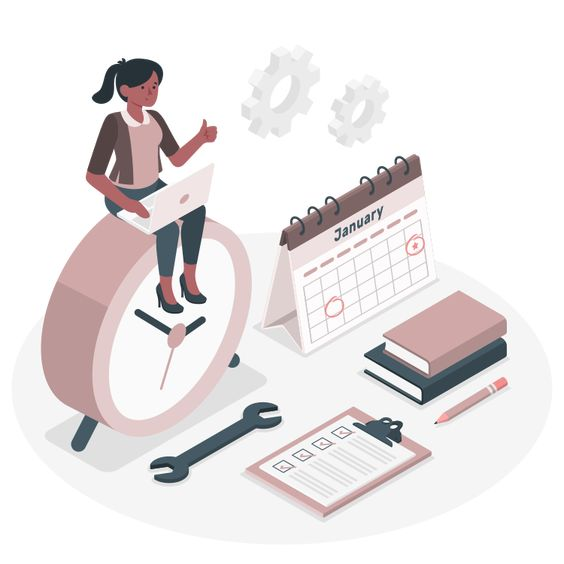

Benyt tidsstyring
Sådan kan du
benytte tidsstyring i din hverdag

Tidsstyring er afgørende for at få mest muligt ud af din hverdag. Kravene til din tid overskrider sommetider de tilgængelige timer i døgnet. Tidsstyring kan derfor hjælpe dig med at strukturere din tid og dermed hjælpe dig igennem hverdagen.
To-do liste
Start din dag med en to-do liste og prioriter den efter, hvad du synes er vigtigst. Det gør det klart for dig, hvad der skal gøres og hjælper dig med at undgå at spilde tid. Du kan benytte fysiske eller digitale kalendere til at planlægge din hverdag, aktiviteter og aftaler. På den måde kan du undgå overlapninger og dobbeltbooking.
Mål
Når du sætter nye mål, skal de være realistiske og opnåelige. Så forhindre du at skabe for høje forventninger til dig selv, som kan føre til stress og frustration.
Pomodoro-teknikken
Opdel dine opgaver i mindre håndterbare dele. Det kan du gøre med Pomodoro-teknikken. Sæt en timer på en tidsstyrings app på fx 25 min., hvor du arbejder fokuseret, og derefter tage ca. 5 min. Pause. Når du har gjort dette 4 gange, kan du tage en længere pause. På denne måde kan du opretholde din koncentration og øge din produktivitet. Forsøg at fokusere på en opgave ad gangen, så du ikke mister fokus og bliver ineffektiv.
Ved at benytte disse strategier til tidsstyring kan du effektivt planlægge din tid og øge din produktivitet i din hverdag.